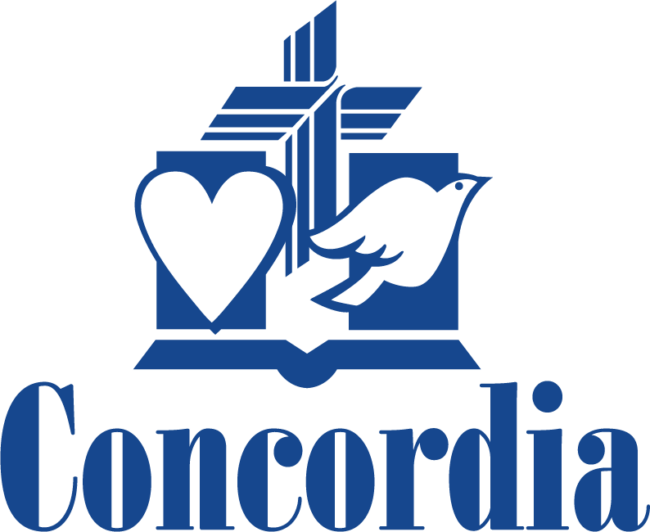

Community Service
Concordia of Franklin Park.
Volunteering with older adults through resident activities, meal service, technology assistance, and online-safety education.

Supporting residents in everyday life.
I volunteer during the summer and throughout the school year, helping residents participate in activities, use technology, recognize online scams, and manage everyday digital communication.
Resident activities
I help organize and run activities such as movie nights and bingo, giving residents opportunities to socialize and participate in the community.
Meal service
I provide table-side meal service and assist residents during scheduled dining periods.
Technology assistance
I help residents navigate emails, text messages, phone calls, and other everyday technology that may otherwise be confusing or difficult to use.
Online-safety education
I developed an anti-fraud information guide that explains common online scams and impersonation attempts. I also work directly with residents to help identify suspicious emails, calls, and messages.